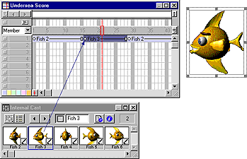

Using Director > Animation > Frame-by-frame animation
Using Director > Animation > Frame-by-frame animation |
Frame-by-frame animation
To create animation that is more complex than is possible with simple tweening, you can use a series of cast members in frame-by-frame animation. Sprites usually refer to only one cast member, but they can refer to different cast members at different times during the life of the sprite.
For example, an animation of a man walking may display several cast members showing the man in different positions. By placing all the images in a sequence within a single sprite, you can work with the animation as if it were a single object.


A single sprite can display several cast members.

Sprite animating
For an example of frame-by-frame animation, click Show Me.
Use this approach sparingly for movies that will be downloaded from the Internet, because all cast members must be downloaded before the animation can run. As an alternative to this type of animation, consider using vector shapes, rotation and skewing on bitmap cast members, or a Flash movie.
You can create multiple-cast-member animations in a variety of ways in Director. The following procedure explains a basic approach. The Cast to Time command provides an effective shortcut; see Shortcuts for animating with multiple cast members.
Note: The best way to prepare cast members for use in multiple-cast-member animation is with onion skinning in the Paint window. For more information, see Using onion skinning.
To animate a sprite with multiple cast members:
1 |
Create a sprite by placing the first cast member in the animation on the Stage in the appropriate frame. |
2 |
Change the length of the sprite as needed. |
Drag the start or end frame in the Score, or enter a new start or end frame number in the Sprite Inspector. |
|
3 |
Choose View > Display > Cast Member. |
This setting displays the name of the cast member on each sprite. For more information, see Displaying sprite labels in the Score. |
|
4 |
Choose View > Sprite Labels > Changes Only. |
This setting changes the view of the Score to show the name of each sprite's cast member when it changes. This makes it easy to identify frames where the cast member changes. You may also want to zoom the score to 800% so the frames are wide enough to display the cast member information. |
|
5 |
Choose Edit > Edit Sprite Frames. |
Edit Sprite Frames makes it easier to select frames within a sprite. See Editing sprite frames. |
|
6 |
Select the frames in the sprite where you want a different cast member to appear. |
7 |
Open the Cast window and select the cast member you want to use next in the animation. |
8 |
Choose Edit > Exchange Cast Members. |
Director replaces the cast member in the selected frame with the cast member selected in the Cast window.
 |
|
9 |
Repeat these steps to complete the animation. Choose Edit Entire Sprite when you're done. |
Sometimes a series of cast members placed in the Score jumps unexpectedly when you play the movie. This occurs because the cast members' registration points aren't aligned properly. When you exchange cast members, Director places the new cast member's registration point precisely where the previous cast member's registration point was. By default, Director places registration points in the center of a bitmap cast member's bounding rectangle.
For information about aligning registration points, see Changing registration points. You can also align sprites relative to their bounding rectangles. See Positioning sprites using guides, the grid, or the Align window.